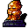

橙水晶の像 Orange crystal statue
英語版 CrawlWiki の記事「Orange crystal statue」(0.29 向け、2022-09-08 版)の翻訳です。原文の著者は編集履歴をご覧ください。
この記事は 0.29 の時点の内容で、最新の 0.34 とは違うところがあるかもしれません。
| 橙水晶の像 I  | |
|---|---|
| HP | 46-94 |
| HD | 10 |
| XP | 681 |
| 速度 | 10(移動しない) |
| AC | 12 |
| EV | 1 |
| 意志力 | ∞
|
| 耐性 | rF++ rC++ rElec rPois+++ rDrown rMiasma rN+++ rTorm rPetrify |
| 弱点 | なし |
| 生息地 | 陸上 |
| 知能 | 人間並み |
| 使用 | 何も使わない |
| 分類 | 非生物 |
| 体格 | 大きい |
| 種類 | 彫像、橙水晶の像 |
| フラグ | 呼吸しない 話す 移動しない 霊視 |

| 半透明の橙色の水晶を削り出して作られた、名もなき小神の精巧な彫像だ。その生気のない目は、邪悪な知性を宿して不気味にきらめいているように見える。近づく者の精神に強力な精神攻撃を浴びせることができる。 |
基本情報
橙水晶の像は動かない番人で、あなたの知力や MP を奪ったり、あなたと仲間を混乱させたりする。さらに影の怪物を唱えて、強力な召喚モンスターで辺りを埋めつくす。橙水晶の像があなたの視界にいるとき、知力が4未満だと能力値ゼロになる危険がある。迷宮の浅い階を過ぎれば、ほとんどどこでもさまざまなヴォールトの中で見かける。
呪文
小技
橙水晶の像の変種
 ウカド・ムーの像はウカド・ムーの修道院の奥の宝物庫を守っている。これを壊すと、まだうろついている影の修行僧もまとめて消えるというおまけがつく。
ウカド・ムーの像はウカド・ムーの修道院の奥の宝物庫を守っている。これを壊すと、まだうろついている影の修行僧もまとめて消えるというおまけがつく。
| 上質なガラス質の橙色の水晶でできた像だ。精神の事柄を極めたウカド・ムーとして知られる神秘家をかたどっている。この像の力には用心したほうがいい。精神の戦いでは、あなたにまったく勝ち目はない。 |
 月の像はレフディブの月面基地で、獲得の巻物並みのアイテムを一つ守っている。この変種は上に挙げた呪文に加えてレフディブの水晶槍を使い、呪文を唱える頻度も20%高い。
月の像はレフディブの月面基地で、獲得の巻物並みのアイテムを一つ守っている。この変種は上に挙げた呪文に加えてレフディブの水晶槍を使い、呪文を唱える頻度も20%高い。
| 微細な結晶できらめく暗色の斑糲岩の一枚岩から削り出された、まったく奇怪な像だ。何らかの生物や人物を表そうとしているのか、それともまったくの抽象なのか、見分けることはできない。
一つだけ確かなことがある。ひどく不穏な像だ。 |